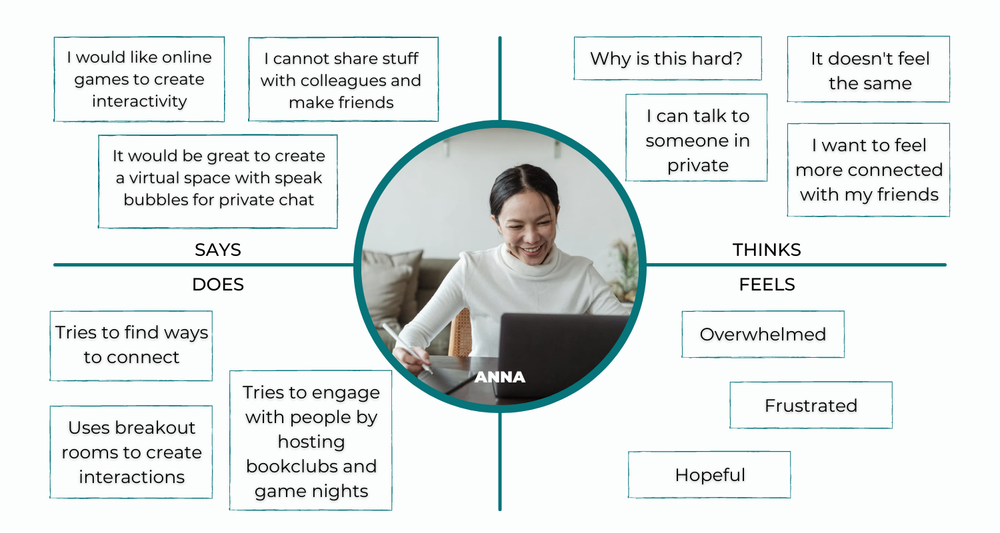

Zoom: Making virtual meetings more social.
The Requirement
The objective was to create more spontaneity within virtual hangout environment.
Context
- Role — Research, Ideation, UI/UX
- Tools— Figma, Miro, Google Slides
The Process
The Problem
How might we create a virtual space in Zoom, for professionals who work from home to connect. The idea was to create a more interactive space to connect with colleges and friends so that they can feel more mentally and socially recharged at the end of their day.
The Solution
The solution provided users a means to be able to interact in a metaverse, allowing them to move about and have a means to interact with the app, while also being part of social or business gatherings.
Understanding
To understand the users, extensive user interviews and the market study was conducted to grasp the root cause of why it was not easy to have a natural interaction over virtual meetings.
To comprehend this the steps that were undertaken were:
Market Research
During the Market Research, a comprehensive study was done to understand how 'direct competitive apps' function, also where these apps succeed and where it fails in engaging their users.
Direct Competitive Apps
- Google Meet
- WebEx
- GoToWebinar
- Microsoft Teams
Competitive Analysis
It was while doing this analysis, that it was derived, that most of the direct competition for Zoom operated on the same thought process, and just provided a means to converse online.
The focus was then shifted to Indirect competition, and landing on gaming. While studying popular games which rely on human interaction, it was deduced that the fatigue and frustration that one feels while on a virtual call is eliminated while in a game environment. It was possible to have organic interaction and work together in these zones while creating, building and developing in this space.
Indirect Competitive Apps
- Fortnite
- Sim 4
User Interview
Once a basic understanding was formed on how the other products on the market performed, it was time to gather information from actual users of the platform to understand their pain points and see what they desire in a virtual meeting app.
A qualitative approach was deemed best to gather enough information on participant interaction and their outlook on virtual meeting spaces.
The interview process was conducted, both online and offline with users of various meeting platforms. Each candidate also had to have attended a virtual event in the past 90 days to make them suitable candidates for the interview.
Participants profile
The interview was divided into 4 main questions with sub-questions to gather more information on their roles and general outlook
- Number of persons interviewed - 6
- Age group - 26 to 35
- Work Type - Work from Home
User Interviews Findings
The user interview provided key insight on how a person interacts online and their emotional and mental reaction to being in a virtual meeting.


Affinity Mapping
To process the information from the User Interview, an Affinity Map was created. The main buckets for the findings were
- Virtual Platform most used
- Pros of virtual meetings & Work from Home
- Cons of Virtual Meetings
- Pros of Virtual Events
- Cons of Virtual Events
- Gaming & Meeting
- Wish List of Features

Empathy Map
And then with the help of an Empathy Map, a further definition was found on what could be the problems with the virtual communications
Synthesis and Identification
Once the User Interviews, Affinity Mapping and Empathy mapping was concluded, it was found that the key areas to focus on were -
- Users of the platform need a way to be able to talk more organically.
- Users would like more interaction or activity while being part of a virtual meeting.
Ideation
Creating a WireFrame
Using the finding in interviews, empathy map, affinity map, a wireframe prototype was created on Figma to address the findings from the synthesis

Usability testing: Wireframe Prototype
With the above wireframe, initial useability testing was conducted to gauge a user's natural progression on the app.
The users were assigned two main tasks:
- Create and start a new meeting room
- Chat privately with a group of people
Feedback
Pros:
- The 'Create an avatar' and 'Playground' quickly drew attention.
- The ability to be able to chat privately in a smaller group of 2 or 3 was deemed extremely useful..
- Ability to enter 'Playground' while already in the meeting
- Ability to select avatar in virtual playground screen, as well as additional options.
Areas of Improvement:
Key Take-Aways
It was decided to retain a 'Hero button'(button with a different colour) for only new features, as the colour change in the layout drew users attention immediately.
Visual Design
Using the feedbacks during usability testing and findings from the user interviews, it was decided to have 2 new features on the zoom main page
- A virtual environment that allows for interactions and reward-based activities.
- Chat allows for organic conversations while in a larger meeting environment.

But while doing the second round of usability testing, it quickly became obvious that users were drawn to the playground feature, and they wanted to be able to access the avatar and filters while in the playground.
Hi-fidelity WireFrames
And thus the final prototype was created, which includes the avatar and filters as features. It is possible to access them while in meeting or playground mode.
Click here to view Prototype


Conclusions & Final Remarks
A digital wireframe was created to understand how users would interact with the options available and what they are drawn to. This helped to narrow down to the aspects that I would like to focus on and the functionalities which seemed to interest users. Throughout this experience, I’ve learned that not everyone thinks the same. I also understood that something that might seem obvious to me might not appear the same to everyone. Some of my key findings were:
- Interactions help people feel less fatigued by being in online meetings. I was able to draw from the experiences of gamers who use interactions in the game environment to help them feel like they are part of something.
- Micro and organic interactions are very essential to users as this mimics a day to day social environment, rather than being forced to chat with an entire group vs a single user.
- Being on camera or being conscious of being seen all the time is quite draining on users and alternatives like avatars and filters will help to alleviate this.